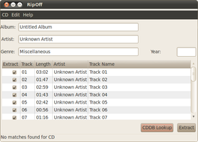
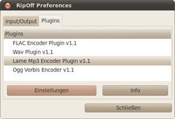

RipOff
Dieser Artikel wurde für die folgenden Ubuntu-Versionen getestet:
Ubuntu 14.04 Trusty Tahr
Zum Verständnis dieses Artikels sind folgende Seiten hilfreich:
RipOff  ist ein CD-Ripper, der Audio-CDs in die Formate FLAC, MP3, WAV oder Vorbis umwandeln kann. Das Programm entstand aus der Unzufriedenheit des Autors mit bestehenden Lösungen wie Grip (komplexe Konfiguration) und Sound Juicer (nur für GNOME). Die Programmoberfläche basiert auf der Grafikbibliothek GTK+, die u.a. in Xfce, LXDE und MATE Verwendung findet.
ist ein CD-Ripper, der Audio-CDs in die Formate FLAC, MP3, WAV oder Vorbis umwandeln kann. Das Programm entstand aus der Unzufriedenheit des Autors mit bestehenden Lösungen wie Grip (komplexe Konfiguration) und Sound Juicer (nur für GNOME). Die Programmoberfläche basiert auf der Grafikbibliothek GTK+, die u.a. in Xfce, LXDE und MATE Verwendung findet.
Leider stagniert die Weiterentwicklung seit Ende 2007. Weitere Programme sind im Artikel CDs rippen zu finden.
Installation¶
 Die Installation erfolgt über die Pakete [1]:
Die Installation erfolgt über die Pakete [1]:
ripoff (universe)
ripoff-mp3-plugin (multiverse)
 mit apturl
mit apturl
Paketliste zum Kopieren:
sudo apt-get install ripoff ripoff-mp3-plugin
sudo aptitude install ripoff ripoff-mp3-plugin
Anschließend kann das Programm gestartet werden. [2]
Bedienung¶
Nachdem eine Audio-CD eingelegt wurde, fragt das Programm alle verfügbaren Informationen online via CDDB ab und zeigt diese an. Ist man mit den Daten einverstanden, sichert man die CD mit "Extract" auf die Festplatte. Sollte die eingelegte CD nicht bekannt oder Einträge fehlerhaft sein, kann man die Daten von Hand ergänzen.
Ist man mit den Voreinstellungen des Programms nicht zufrieden, kann man diese ändern.
|  |
| Hauptfenster |
|  |
| Einstellungsmenü |
Konfiguration¶
Über "Edit -> Preferences" gelangt man zum Einstellungsmenü.
| Einstellungsmenü | ||
| Reiter | Beschreibung | |
| "Input/Output" | Pfad zum CD-Laufwerk, das Ausgabeformat (%a/(%y) %l/%N - %a - %t entspricht Interpret/(Jahr) Album/Nr - Interpret - Titel) und den Ausgabeordner (Voreinstellung: Homeverzeichnis) definieren. Verharrt man mit dem Mauszeiger über dem Ausgabeformat, öffnet sich ein kleines Pop-up-Fenster mit den möglichen Optionen. | |
| "Plugins" | Zur Verfügung stehende Ausgabe-Formate auswählen und über "Einstellungen" die Qualität derselben beeinflussen | |
Diese Einstellungen werden in der Datei ~/.ripoff/prefs.xml gespeichert.
Tastenkürzel¶
| Tastenkürzel | |
| Taste(n) | Funktion |
| Strg + L | CDDB-Datenbankabfrage starten |
| Strg + S / Strg + D | Alle Tracks aus-/abwählen |
| Strg + X | CD rippen |
| Strg + P | Einstellungsmenü aufrufen |
 Übersichtsartikel
Übersichtsartikel- Erstellt mit Inyoka
-
 2004 – 2017 ubuntuusers.de • Einige Rechte vorbehalten
2004 – 2017 ubuntuusers.de • Einige Rechte vorbehalten
Lizenz • Kontakt • Datenschutz • Impressum • Serverstatus -
Serverhousing gespendet von